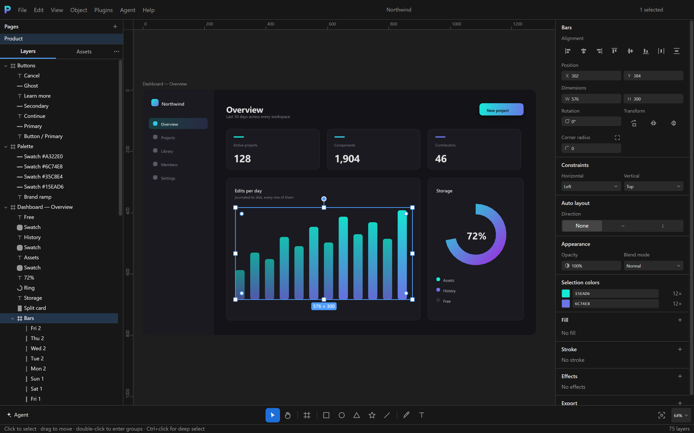
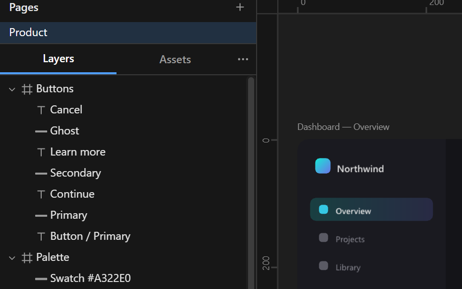
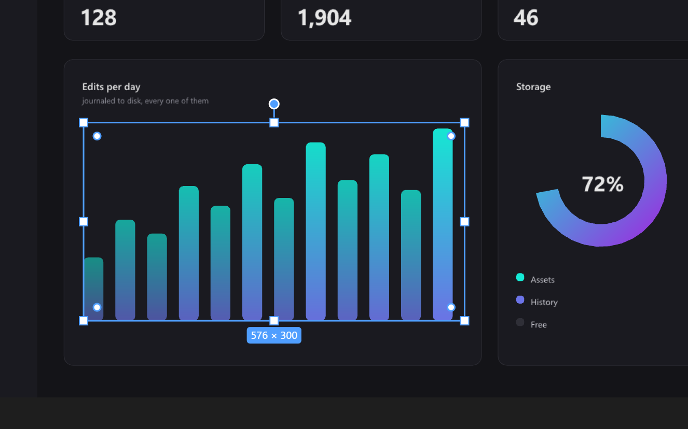
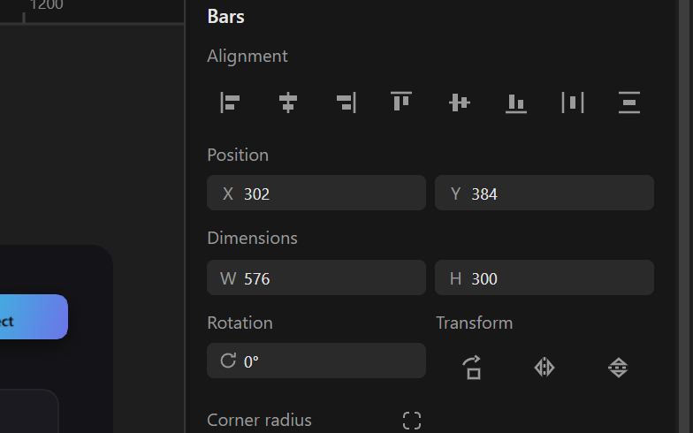

Your files never leave.
Your agent still gets in.
Polyform is an open-source vector design editor that runs entirely on your machine — no cloud, no account, every project a plain folder on disk. It also ships an MCP server inside the app, so an AI agent can read your document, see your canvas and make real edits, through capabilities you grant one at a time and revoke while it is still connected.
From grey boxes
to the printed thing.
Every piece below was built in Polyform and exported from its own canvas. Not stock, not mocked up somewhere else — that would make this section a lie.
An editor your agent
can actually drive.
Not a chat box bolted to a sidebar. Polyform runs a Model Context Protocol server inside the running app, so an agent attaches to the document you have open — reads it, looks at it, and edits it as one undoable step attributed to the agent that made it.
Five capabilities, granted one at a time
The whole server is off until you turn it on, bound to loopback, and protected by a bearer token. Each capability is granted and revoked individually — including while the agent is mid-session — and a light on the bottom bar is lit the entire time something is attached.
Ten tools
The same tools are available with no window at all: the headless
polyform CLI runs
mcp serve over stdio against a
.poly file, with exports pixel-identical to the app. Which
makes an agent in CI as first-class as an agent at your desk.
Your work is a folder.
That is the whole idea.
Open a project and there is nothing to log into and nothing syncing in the background. A Polyform
project is a directory of ordinary files: a binary scene, a real SQLite undo journal, and your
images stored by content hash. Back it up with cp. Diff it
in git. Open it in ten years.
- Undo that survives closing the app
- Every edit is journaled to disk. Reopen a project a week later and keep pressing Ctrl+Z, or scrub the timeline and jump anywhere in its history.
- No save button
- Edits are written about a second after you stop making them, and the title bar tells you when they land.
- A format you can read without us
- The scene schema is published, and the bundle opens with standard tools.
Copying the folder copies the entire project — shapes, history and assets included. Design-system libraries are just other projects you attach.
Built like an engine,
not a page.
Shapes are never DOM or SVG nodes. Everything paints through a GPU-composited canvas pipeline, behind a renderer interface with two peer backends.
100,000
shapes panning at 60fps
A lyon-tessellated, batched WebGPU pipeline: 0.18 ms of CPU per frame, in one draw call, measured by the harness inside the app. Where there is no WebGPU device it falls back to Canvas2D on its own.
21 / 21
pixel-identical fixtures
Shadows, blurs, every blend mode, shaped text from a GPU glyph atlas and all three mask kinds are held to the Canvas2D reference, so turning the GPU on cannot change how your file looks.
Rust twins
proven by differential fuzzing
Geometry, spatial index, exact-CSG booleans, the scene graph, constraints, layout, serialization and text shaping all have Rust counterparts compiled to WebAssembly. Each ships only after a fuzz suite proves it matches the TypeScript reference.
rustybuzz
real shaping, not the browser's
Kerning and ligatures come from the font's own tables, with layout pinned to the shipped engine rather than to whatever Chromium version you happen to have. Fonts are read straight off your OS.
A real editor,
not a demo.
Multi-page documents, frames with auto layout and constraints, components and instances, pen paths with a full vector-edit mode, text shaped from your system fonts, gradients, effects, masks, booleans, snapping and smart guides, SVG import, PNG and SVG export.




Read before you
commit to it.
Feature matrix →
244 rows with honest statuses, recounted every release.
Roadmap →
What shipped, what is next, and in what order.
Architecture decisions →
Every load-bearing choice, and what would make us replace it.
Plugin & agent API →
The MCP surface and the plugin dev preview.
File format →
The scene object model, documented so the format outlives us.
Issues & contributing →
Plenty of well-scoped work is marked up for the taking.